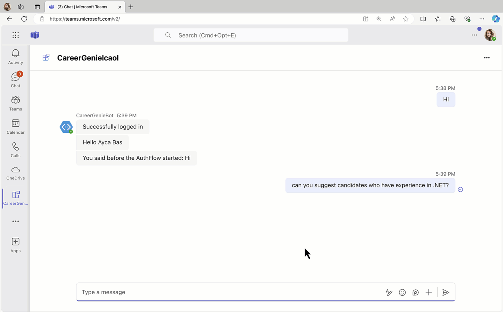

Lab BTA5 - Add actions to handle complex tasks
In this lab you will:
- Learn what actions are and how to handle complex tasks with them
- Integrate multi-prompt in your custom engine agent to handle actions
- Implement actions in your custom engine agent
- Utilize Microsoft Graph and actions together to automate workflows
Do these labs if you want to build a Custom engine agent with custom AI model and orchestration using Azure OpenAI and Teams AI library
Introduction
It's time to add some actions for Career Genie to handle complex tasks and workflows! In this lab, you'll integrate a new prompt in Career Genie's logic that can handle lists of candidates. That basically means that when you are searching for candidates with Career Genie, you can also create lists for candidates and add their names in. Once you are done, you can also send these lists to HR for scheduling interviews. All these will be handled by actions you'll implement in Career Genie! Let's get started.
What are actions in Custom engine agents?
An action in an AI system is like a basic function or method in your code—it's a specific task that the system can perform. Actions are the building blocks that the AI uses to accomplish various tasks based on the user’s input. The AI system decides which action to execute depending on what the user asks for.
For example, actions could include:
-
Creating a new list.
-
Removing a list.
-
Adding items to an existing list.
-
Removing items from an existing list.
When a user interacts with the AI system, the system interprets the prompt and selects the appropriate actions to carry out. It’s like having a toolbox of functions, and the AI picks the right tool for the job based on the user’s needs.
Exercise 1: Create a new prompt with actions
In this exercise, you'll create a new prompt in "prompts" folder to handle actions.
Step 1: Create a "monologue" prompt
In your project, go to src/prompts/ and add a new folder with a name monologue. In src/prompts/monologue/ folder, create a new file with a name config.json and copy the following code snippet in the file:
{
"schema": 1.1,
"description": "A bot that can chat with users",
"type": "completion",
"completion": {
"completion_type": "chat",
"include_history": true,
"include_input": true,
"max_input_tokens": 2800,
"max_tokens": 1000,
"temperature": 0.9,
"top_p": 0.0,
"presence_penalty": 0.6,
"frequency_penalty": 0.0
},
"augmentation": {
"augmentation_type": "monologue"
}
}
Brief intro about augmentation in config.json
Augmentations help simplify prompt engineering by automatically adding specific instructions to your prompts. With augmentations, you can configure whether you want the AI to handle multi-step tasks (sequence) or think through its actions step by step (monologue).
In src/prompts/monologue/ folder, create a new file with a name skprompt.txt and copy the following text in the file:
You are a career specialist named "Career Genie" that helps Human Resources team who can manage lists of Candidates.
You are friendly and professional. You like using emojis where appropriate.
Always share the lists in bullet points.
rules:
- only create lists the user has explicitly asked to create.
- only add Candidates to a list that the user has asked to have added.
- if multiple lists are being manipulated, call a separate action for each list.
- if Candidates are being added and removed from a list, call a separate action for each operation.
- if user asks for a summary, share all the lists and candidates.
- only send an email to HR if user has explicitly asked to send.
Current lists:
{{$conversation.lists}}
In src/prompts/monologue/ folder, create a new file with a name actions.json and copy the following code snippet in the file:
[
{
"name": "createList",
"description": "Creates a new list with an optional set of initial Candidates",
"parameters": {
"type": "object",
"properties": {
"list": {
"type": "string",
"description": "The name of the list to create"
},
"Candidates": {
"type": "array",
"description": "The Candidates to add to the list",
"Candidates": {
"type": "string"
}
}
},
"required": [
"list"
]
}
},
{
"name": "deleteList",
"description": "Deletes a list",
"parameters": {
"type": "object",
"properties": {
"list": {
"type": "string",
"description": "The name of the list to delete"
}
},
"required": [
"list"
]
}
},
{
"name": "addCandidates",
"description": "Adds one or more Candidates to a list",
"parameters": {
"type": "object",
"properties": {
"list": {
"type": "string",
"description": "The name of the list to add the item to"
},
"Candidates": {
"type": "array",
"description": "The Candidates to add to the list",
"Candidates": {
"type": "string"
}
}
},
"required": [
"list",
"Candidates"
]
}
},
{
"name": "removeCandidates",
"description": "Removes one or more Candidates from a list",
"parameters": {
"type": "object",
"properties": {
"list": {
"type": "string",
"description": "The name of the list to remove the item from"
},
"Candidates": {
"type": "array",
"description": "The Candidates to remove from the list",
"Candidates": {
"type": "string"
}
}
},
"required": [
"list",
"Candidates"
]
}
}
]
Exercise 2: Implement a logic in the planner to choose between prompts
In this exercise, you'll write a function that checks the user prompt and decides between "chat" or "monologue" prompts.
Step 1: Create a function for defaultPrompt in the planner
In your project, go to src/app/app.ts file, and add the following function in your project:
async function choosePrompt(context){
if (context.activity.text.includes('list')){
const template = await prompts.getPrompt('monologue');
return template;
}
else {
const template = await prompts.getPrompt('chat');
const skprompt = fs.readFileSync(path.join(__dirname, '..', 'prompts', 'chat', 'skprompt.txt'));
const dataSources = (template.config.completion as any)['data_sources'];
dataSources.forEach((dataSource: any) => {
if (dataSource.type === 'azure_search') {
dataSource.parameters.authentication.key = config.azureSearchKey;
dataSource.parameters.endpoint = config.azureSearchEndpoint;
dataSource.parameters.indexName = config.indexName;
dataSource.parameters.embedding_dependency.deployment_name =
config.azureOpenAIEmbeddingDeploymentName;
dataSource.parameters.role_information = `${skprompt.toString('utf-8')}`;
}
});
return template;
}
}
Review choosePrompt function
Recognize that the choosePrompt function checks if user prompt includes "list". If yes, then it returns monologue prompt, if no, then it returns the chat that is currently our default prompt.
In src/app/app.ts file, find the planner and remove the code assigned to the defaultPrompt. Then, define choosePrompt function as the defaultPrompt. The final version of the planner will look like below:
const planner = new ActionPlanner({
model,
prompts,
defaultPrompt: choosePrompt,
});
Exercise 3: Implement actions in the app
In this exercise, you'll create functions for your actions and register the action handlers in the app.
Step 1: Update ConversationState and define functions for each action
In src/app/app.ts, update the @microsoft/teams-ai with DefaultConversationState. The final version of the import will look as below:
import { AuthError, ActionPlanner, OpenAIModel, PromptManager, AI, PredictedSayCommand, Application, TurnState, DefaultConversationState } from "@microsoft/teams-ai";
In src/app/app.ts, find the ConversationState and ApplicationTurnState, replace them with the following code:
// Strongly type the applications turn state
interface ConversationState extends DefaultConversationState {
lists: Record<string, string[]>;
}
export type ApplicationTurnState = TurnState<ConversationState>;
In src/app/ folder, create another file with a name actions.ts and add the following source code to define functions for the actions:
import { ApplicationTurnState } from './app';
function getCandidates(state: ApplicationTurnState, list: string): string[] {
ensureListExists(state, list);
return state.conversation.lists[list];
}
function setCandidates(state: ApplicationTurnState, list: string, Candidates: string[]): void {
ensureListExists(state, list);
state.conversation.lists[list] = Candidates ?? [];
}
function ensureListExists(state: ApplicationTurnState, listName: string): void {
if (typeof state.conversation.lists != 'object') {
state.conversation.lists = {};
}
if (!Object.prototype.hasOwnProperty.call(state.conversation.lists, listName)) {
state.conversation.lists[listName] = [];
}
}
function deleteList(state: ApplicationTurnState, listName: string): void {
if (
typeof state.conversation.lists == 'object' &&
Object.prototype.hasOwnProperty.call(state.conversation.lists, listName)
) {
delete state.conversation.lists[listName];
}
}
export { getCandidates, setCandidates, ensureListExists, deleteList };
Step 2: Register action handlers in the app
Insrc/app/app.ts, add the following action imports on top of the file:
import { ensureListExists, getCandidates, setCandidates, deleteList } from "./actions";
Then add the following code snippet in the src/app/app.ts to register action handlers in the AI System:
// Register action handlers
interface ListOnly {
list: string;
}
interface ListAndCandidates extends ListOnly {
Candidates?: string[];
}
app.ai.action('createList', async (context: TurnContext, state: ApplicationTurnState, parameters: ListAndCandidates) => {
ensureListExists(state, parameters.list);
if (Array.isArray(parameters.Candidates) && parameters.Candidates.length > 0) {
await app.ai.doAction(context, state, 'addCandidates', parameters);
return `List created and Candidates added. Summarize your action.`;
} else {
return `List created. Summarize your action.`;
}
});
app.ai.action('deleteList', async (context: TurnContext, state: ApplicationTurnState, parameters: ListOnly) => {
deleteList(state, parameters.list);
return `list deleted. Summarize your action.`;
});
app.ai.action('addCandidates', async (context: TurnContext, state: ApplicationTurnState, parameters: ListAndCandidates) => {
const Candidates = getCandidates(state, parameters.list);
Candidates.push(...(parameters.Candidates ?? []));
setCandidates(state, parameters.list, Candidates);
return `Candidates added. Summarize your action.`;
});
app.ai.action('removeCandidates', async (context: TurnContext, state: ApplicationTurnState, parameters: ListAndCandidates) => {
const Candidates = getCandidates(state, parameters.list);
(parameters.Candidates ?? []).forEach((candidate: string) => {
const index = Candidates.indexOf(candidate);
if (index >= 0) {
Candidates.splice(index, 1);
}
});
setCandidates(state, parameters.list, Candidates);
return `Candidates removed. Summarize your action.`;
});
Step 3: Test your app with the new actions
Let's test Career Genie with the new actions. Start debugging your app by selecting Run and Debug tab on Visual Studio Code and Debug in Teams (Edge) or Debug in Teams (Chrome). Microsoft Teams will pop up on your browser. Once your app details show up on Teams, select Add and start chatting with your app.
Tip: Testing this exercise locally
Make sure to test and debug this exercise on Teams locally, as some of the Teams AI library capabilities you've implemented in your app so far won't smoothly work in the Teams App Test Tool.
To understand how the flow works, you may ask the following questions in order:
- Hello
- Can you suggest candidates who have experience in .NET?
- Great, add Isaac Talbot in the .NET Developer Candidates list
- Add Anthony Ivanov in the same list with Isaac
- Can you summarize my lists
- Suggest candidates who have experience in Python and are able to speak Spanish
- Nice! Add Sara Folgueroles in the Python Developer Candidates (Spanish speaking) list
- Can you suggest candidates who have 10+ years of experience
- Ok, remove Anthony from the .NET Developer Candidates list
- Add Anthony Ivanov in the Talent list
- Summarize my lists

Exercise 4: Utilize actions together with the Microsoft Graph to automate workflows
In this exercise, you'll implement a new action that utilizes Microsoft Graph to send the candidates lists to the HR for scheduling interviews.
Step 1: Define a new action in your prompt for sending emails
In your project, go to src/prompts/monologue/actions.json and add the following action:
,
{
"name": "sendLists",
"description": "Send list of Candidates to Human Resources, aka HR for scheduling interviews",
"parameters": {
"type": "object",
"properties": {
"list": {
"type": "string",
"description": "The name of the list to send Human Resources, aka HR for scheduling interviews"
},
"Candidates": {
"type": "array",
"description": "The Candidates in the list to send Human Resources, aka HR for scheduling interviews",
"Candidates": {
"type": "string"
}
}
},
"required": [
"list",
"Candidates"
]
}
}
Step 2: Create a new function for the new sendLists action
In your project, go to src/app/app.ts, locate the getUserDisplayName and add export in front of the function. The final version of the function will look like below:
export async function getUserDisplayName {
...
...
...
}
Locate app in the src/app/app.ts and update the scope with 'Mail.Send'. The final version of the app will look like below:
const app = new Application({
storage,
authentication: {settings: {
graph: {
scopes: ['User.Read', 'Mail.Send'],
...
...
}
}}});
Go to env/.env.local.user and add the following HR email as an environment variable:
HR_EMAIL=<YOUR-EMAIL-ADDRESS>
HR_EMAIL details to test this lab
Please enter your own account email address in HR_EMAIL to test this lab. In an ideal scenario, you'll use an email address of a Human Resources Team to send interview scheduling emails. Note that this lab is only for prototyping purposes and shouldn't be used in production.
Go to teamsapp.local.yml and add the following line under the file/createOrUpdateEnvironmentFile, envs list:
HR_EMAIL: ${{HR_EMAIL}}
Go to src/config.ts and add the following line in the config:
HR_EMAIL: process.env.HR_EMAIL
Go to src/app/actions.ts and update the imports on top of the code as below:
import { getUserDisplayName, ApplicationTurnState } from './app';
import { Client } from "@microsoft/microsoft-graph-client";
import config from '../config';
Then, add the following functions in the actions.ts:
async function sendLists(state: ApplicationTurnState, token): Promise<string> {
const email = await createEmailContent(state.conversation.lists, token);
try {
const client = Client.init({
authProvider: (done) => {
done(null, token);
}
});
const sendEmail = await client.api('/me/sendMail').post(JSON.stringify(email));
if (sendEmail.ok) {
return email.message.body.content;
}
else {
console.log(`Error ${sendEmail.status} calling Graph in sendToHR: ${sendEmail.statusText}`);
return 'Error sending email';
}
} catch (error) {
console.error('Error in sendLists:', error);
throw error;
}
}
async function createEmailContent(lists, token) {
let emailContent = '';
for (const listName in lists) {
if (lists.hasOwnProperty(listName)) {
emailContent += `${listName}:\n`;
lists[listName].forEach(candidate => {
emailContent += ` • ${candidate}\n`;
});
emailContent += '\n'; // Add an extra line between different lists
}
}
const profileName = await getUserDisplayName(token);
const email ={
"message": {
"subject": "Request to Schedule Interviews with Shortlisted Candidates",
"body": {
"contentType": "Text",
"content": `Hello HR Team, \nI hope this email finds you well. \n\nCould you please assist in scheduling 1:1 interviews with the following shortlisted candidates? \n\n${emailContent} Please arrange suitable times and send out the calendar invites accordingly. \n\n Best Regards, \n ${profileName}`
},
"toRecipients": [
{
"emailAddress": {
"address": `${config.HR_EMAIL}`
}
}
]
},
"saveToSentCandidates": "true"
};
return await email;
}
Finally in src/app/actions.ts, add sendLists in theactions.ts exports. The final version of the exports will look like below:
export { getCandidates, setCandidates, ensureListExists, deleteList, sendLists };
Step 3: Register sendLists action handler
Go to src/app/app.ts and update the ./actions import with the sendLists function. The final version of the import will look as below:
import { ensureListExists, getCandidates, setCandidates, deleteList, sendLists } from "./actions";
Then, add the following code snippet to register sendLists action in the AI System:
app.ai.action('sendLists', async (context: TurnContext, state: ApplicationTurnState, parameters: ListAndCandidates) => {
await sendLists(state, state.temp.authTokens['graph']);
return `Email sent to HR. Summarize your action.`;
});
Step 4: Update your Entra ID app registration
Update the script for your Entra ID app for new scope Mail.Send. Go to file aad.manifest.json and inside the node requiredResourceAccess find "resourceAppId": "Microsoft Graph",. In the resourceAccess array add below scope after adding a comma.
{
"id": "Mail.Send",
"type": "Scope"
}
Step 5: Test your app and the new sendLists action
Let's test Career Genie with the new sendLists actions. Start debugging your app by selecting Run and Debug tab on Visual Studio Code and Debug in Teams (Edge) or Debug in Teams (Chrome). Microsoft Teams will pop up on your browser. Once your app details show up on Teams, select Add and start chatting with your app.
Tip: Testing this exercise locally
Make sure to test and debug this exercise on Teams locally, as some of the Teams AI library capabilities you've implemented in your app so far won't smoothly work in the Teams App Test Tool.
To start a conversation with Career Genie, simply type a message. For example, you can begin with 'Hi'.
Tip: Check pop up settings in your browser
Make sure Pop up is not blocked by browser for a smoother experience for below instructions.
You will see a small dialog box for the additional permissions with ‘Cancel’ and ‘Continue’ buttons. This dialog is for logging in and giving your consent to the required permissions. Select Continue.

Since you're running locally with Developer Tunnels, you'll see a warning screen, select Continue. Users won't see this when your app is deployed. You'll be redirected to login and consent to the app's permissions.
Tip: Consent on behalf of your organization
If you're a Microsoft 365 administrator, you will also be given the option to "Consent on behalf of your organization" which will consent for every user in your tenant.
Select Accept to consent to the permissions.
You will now get a message from Career Genie with your logged in name showing successful authentication. Now, you can start testing the new action in Career Genie!
To understand how the flow works, you may ask the following questions in order:
- Hello
- Can you suggest candidates who have experience in .NET?
- Great, add Isaac Talbot in the .NET Developer Candidates list
- Add Anthony Ivanov in the same list with Isaac
- Can you summarize my lists
- Suggest candidates who have experience in Python and are able to speak Spanish
- Nice! Add Sara Folgueroles in the Python Developer Candidates (Spanish speaking) list
- Can you suggest candidates who have 10+ years of experience
- Ok, remove Anthony from the .NET Developer Candidates list
- Add Anthony Ivanov in the Talent list
- Summarize my lists
- Add Pedro Armijo in the same list with Sara
- Summarize my lists
- Send my lists to HR
Check your mailbox
After the last step, check your mailbox to see if you received any email for the lists of candidates.

CONGRATULATIONS!
You have completed BTA5 - Add actions to handle complex tasks! If you want explore further, the source code of this lab is available in the Copilot Developer Camp repo.
This is the end of the Build your own agent path! Did you enjoy building Career Genie? Let us know about your experience and feedback. 💜